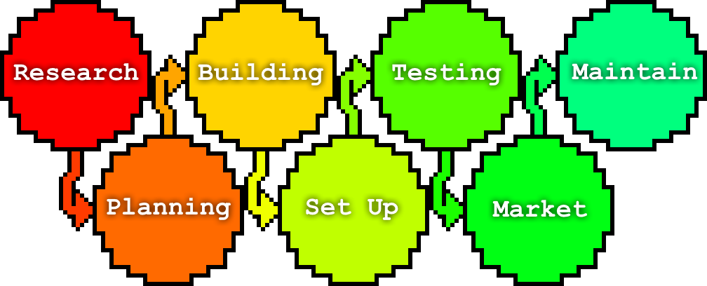

The Web Development Lifecycle
7 steps to follow for success
Step 1: Research
Gather the client's wants and needs. Identify purpose and audience of the site. Find whatever current trends may be relevant. Make sure you know everything you need to know before starting.
Step 2: Planning
How is the site going to look?
- What is going to be the layout?
- How can you incorporate any logos?
- What color palette will you use?
- Is it appealing to the target audience?
How is it going to work?
- What tools and technologies will you utilize?
- Will the site be static or dynamic?
- What are the use cases and how will you accommodate them?
Step 3: Building
This is where you take into consideration everything from your planning phase, and actually build the site. This includes the front-end and back-end. Start with the main page and continue into the interior pages until everything is built.
Step 4: Set Up
After the site is done and working on your own computer, you will need to deploy it. This includes setting up domains, hosts, or anything else needed to get the site working on the internet.
Step 5: Testing
Now that everything is set up, the site must undergo in depth testing to ensure everything works. This includes front-end, back-end, and anything the site relies on. If anything is found to not work on the live site, here is where you fix those issues.
Step 6: Market
This step includes everything that helps your site reach your target audience. Review analytics, perform SEO (search engine optimization), and promote on social media and with ads.
Step 7: Maintenance
Now that the site is finished, it must be maintained until its EOL. This includes fixing any issues that arise, keeping everything up to date, and adding any additional features.